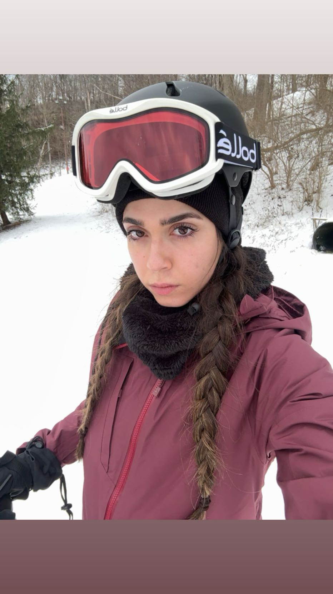
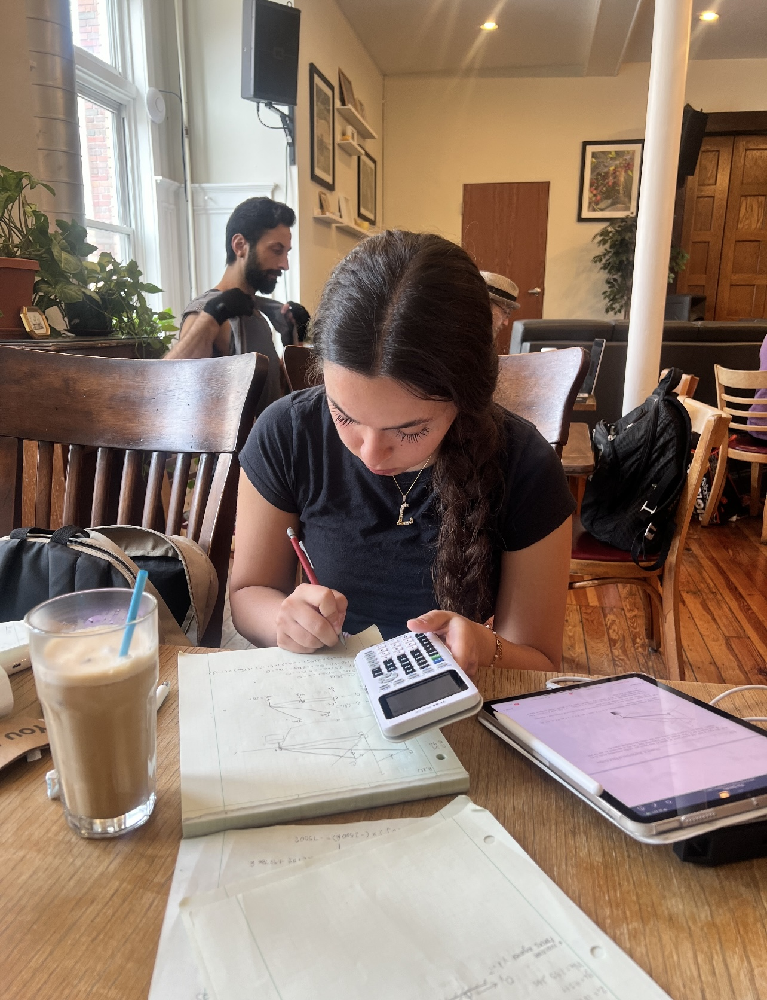
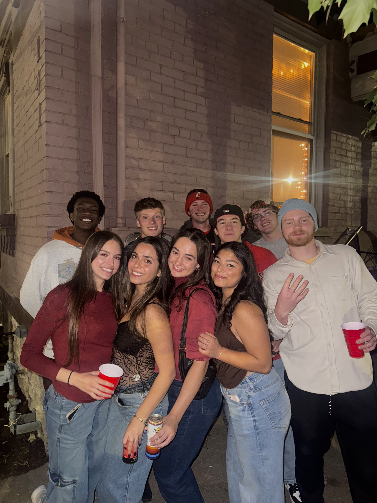

Fufilling lifestyle
One of my main values is to have a fufilling lifestyle. If you know me you know I am always busy doing something - and no matter what it is I try to make the best of it. If I must do a chore or homework, I'll do my best to make the most of it and make it as enjoyable as possible. Whatever way I can romantasize a task or event, I will. I love having plans, I love planning things, and in general always being up to something. The list of what is a long one, but you won't find me laying around at home often.
I believe in never wasting a second just laying around. My biggest fear is sitting one day with the regret that I didn't do more.
I love exploring, I love music, and I love dressing up. Any single one of these or a combination of these things will be a part of my daily activities. If I can't dress nice or explore, I have music on. If I can't listen to music or explore, let it be known I am dressed up in a cute outfit. You get the jist.
Drive and success
Growing up, I would love to say I naturally wanted to succeed in school. It definitely felt like I didn't have a choice. Luckily, I cared and tried, and it set me up well for college. Once college hit, I had more of a drive to care a bit more. I could see what success could do for me. I strive to be successful, and I strive to do well in school and at my internship.
I find value in being successful. It gives me a purpose in life. Having a purpose in life really is what brings us joy. Many may not know or realize, but that truly is the core of it all. Losing this or getting behind would impact me negatively, so I wake up and try every day.
Interactions
I love people. I take pride in my relationships with people. Conversating is one of my favorite things to do, and learning about individual personalities and lives is incredibly interesting. In my young years to high school I had a good set of friends, and I always had someone to rely on. My freshman year was by far one of the hardest years of my life. I have never felt lonlier, and I cried to my brother on the phone each night about my lack of friendships and relationships, and I realized just how much human interaction meant to me. I didn't think I'd make it through.
Looking back, I was quite dramatic. I had people, I just couldn't handle being alone for as long as I was, and having patience to see them when I could, which was rarely. I eventually grew the largest group of friends from my first co-op rotation. These same people were in all of my classes, and now about 90% of our class are all close friends and all hangout very often. The following co-op rotations introduced new faces, introducing new friends. Those friends have friends, and it grew from there. I don't tell them often, and many have never heard it from me, but I would not be where I am today if it weren't for them. I love these people and I will miss each of them dearly.
Doing me!


